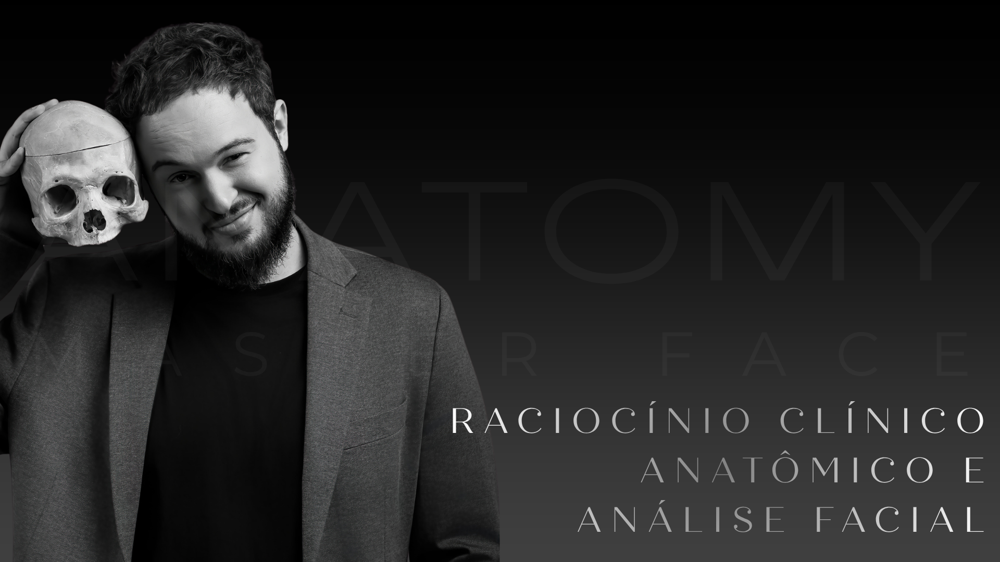
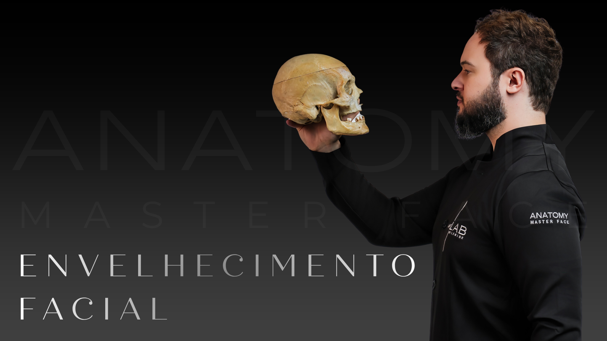
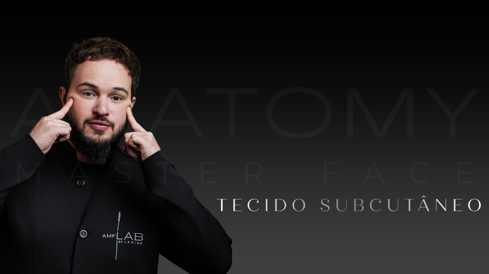
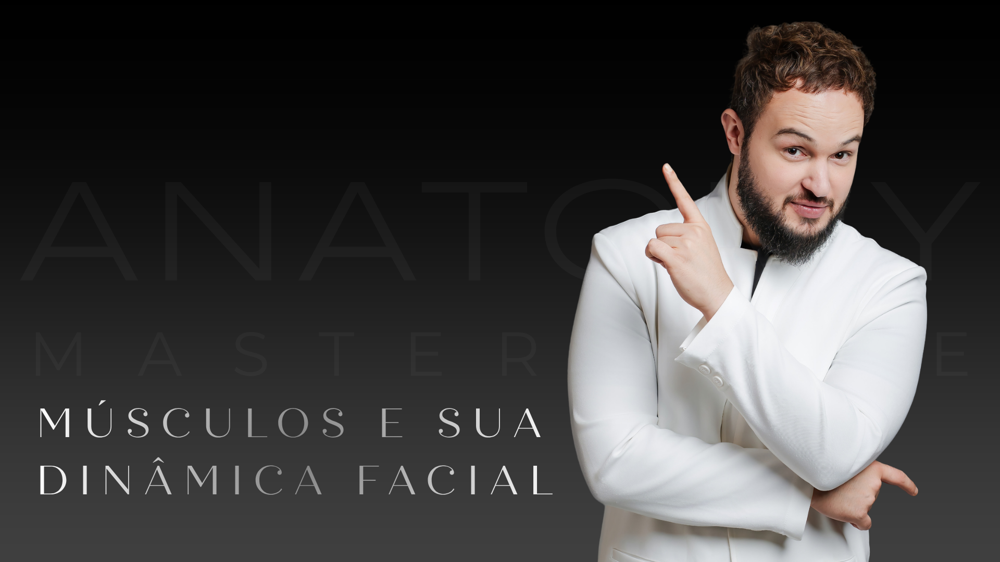
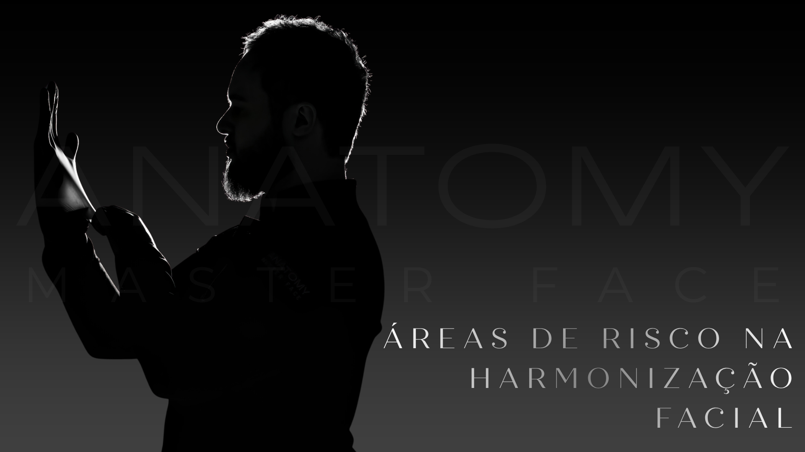
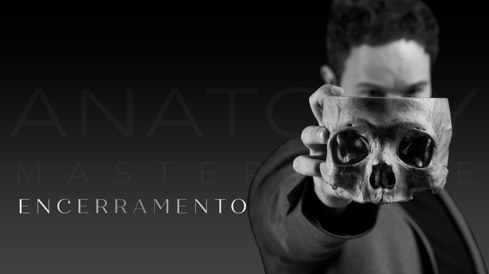

Aprenda a interpretar a face em profundidade, compreender estruturas anatômicas críticas e tomar decisões clínicas com mais segurança, previsibilidade e naturalidade.
Garanta sua vaga no Anatomy Master Face com condição especial.
12x de R$ 119,90
ou R$ 1.438,80 à vista

Entender a variação anatômica e personalizar cada tratamento é o que diferencia um profissional premium.
Você hesita antes de certos procedimentos porque não tem certeza absoluta sobre os planos anatômicos daquela região.
Já precisou lidar com intercorrências ou retrabalho que, com mais domínio anatômico, poderiam ter sido evitados.
Estudou anatomia em livros com ilustrações que não se traduzem para a realidade do paciente na cadeira.
Assista ao vídeo e entenda a diferença entre ser um mero executor de técnicas e se tornar um mestre capaz de guiar cada procedimento com segurança cirúrgica.

A verdadeira autonomia do profissional que atua em HOF não vem de protocolos e sim da capacidade de enxergar a face de forma tridimensional. No Anatomy Master Face, estarei ao seu lado guiando você nessa jornada para elevar seu padrão clínico, sem mistérios e com a precisão que a anatomia nos proporciona.
Uma experiência de estudo pensada para assistir no seu ritmo, consultar depois e aplicar com mais clareza na prática clínica.






O impacto real do domínio anatômico na segurança e nos resultados do dia a dia.
“Foi uma experiência extremamente enriquecedora, com destaque para a dissecação em cadáver fresh frozen e a aplicação prática dos produtos, que proporcionaram um aprendizado realista e detalhado da anatomia facial.”
“Pontualidade, qualidade e comprometimento foram as marcas registradas deste curso, que entregou exatamente o que prometeu e muito mais. A saúde estética vai muito além da superficialidade; é uma arte que exige profundidade de conhecimento. Aprendi que, para ser excelente, é imprescindível cercar-se dos melhores. Agradeço especialmente o Dr. Luccas Lenine por proporcionar uma experiência tão enriquecedora! SOU DO TIME DE PROFISSIONAIS QUE ENXERGAM ALÉM DO QUE VEEM!”
“Luccas Lenine sua entrega ao compartilhar o conhecimento, sua presença cuidadosa ao conduzir cada etapa do nosso aprendizado e seu compromisso inabalável toda e qualquer dúvida que tivemos, foram, para mim, verdadeiras manifestações de excelência pedagógica...foi uma experiência transformadora, que superou minhas expectativas e reafirmou minha paixão pela ANATOMIA, pela dissecação e por continuar a ensinar o manejo de intercorrências.”
“...muito feliz por ter conseguido dissecar a artéria facial e todos os seus ramos! Obrigada Luccas Lenine pela oportunidade! Tenho certeza que daqui para frente o meu olhar para HOF será diferenciado”
Este ambiente não é para iniciantes buscando o básico. O AMF foi desenhado para profissionais que já atuam na Harmonização Orofacial, que possuem conhecimento de base, mas que buscam a previsibilidade e a confiança que só o entendimento tridimensional da anatomia pode proporcionar. Se você quer parar de replicar mapas prontos e deseja pensar o procedimento em sua totalidade, este é o seu lugar.
Quero me inscreverAcesso imediato • 1 ano de curso
Por apenas:
ou R$ 1.438,80 à vista
Quero garantir minha condição especialNão é pré-requisito. O AMF Digital é voltado exclusivamente para profissionais de saúde habilitados, não tendo obrigatoriedade de nível técnico exigido. Ele foi estruturado para atender desde profissionais em início de jornada na área até quem já atua e busca aprofundamento técnico. Após a inscrição, você recebe acesso imediato à área de membros e inicia sua formação nas trilhas de conteúdo, no seu ritmo.
100% online, com aulas gravadas organizadas por módulos, lives periódicas com o Dr. Luccas Lenine e convidados, e acesso à plataforma por 12 meses, podendo assistir quando e quantas vezes quiser.
Sim. Nosso suporte oficial está disponível para esclarecer dúvidas sobre o curso, formato e condições antes da sua inscrição.
Seu acesso é válido por 12 meses a partir da confirmação da matrícula, com liberdade para assistir e revisar as aulas quantas vezes quiser dentro desse período.
Sim. O AMF Digital é uma plataforma viva, novos materiais, lives e atualizações são adicionados periodicamente, mantendo o conteúdo alinhado às práticas mais atuais.
Sim. Ao concluir os critérios estabelecidos na área de membros, o certificado de conclusão é disponibilizado.
Sim, o parcelamento está disponível diretamente na página de inscrição, com as condições vigentes no momento da compra.
Sim. Você conta com garantia incondicional de 7 dias após a inscrição para avaliar o conteúdo com segurança.
Sim. Você tem acesso ao nosso canal oficial de suporte para dúvidas de acesso, pagamento e uso da plataforma durante toda a sua jornada.
O conteúdo é conduzido diretamente pelo Dr. Luccas Lenine nas aulas e lives. Para dúvidas de acesso, pagamento e uso da plataforma, nosso time de suporte está disponível para te atender rapidamente.